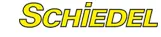

60 rokov skúseností
Schiedel je odborník v oblasti komínov a najväčší podnik na svete špecializovaný výhradne na odvod spalín. Na jeho skúsenosti a profesionalitu sa môžete vždy spoľahnúť.

Schiedel je odborník v oblasti komínov a najväčší podnik na svete špecializovaný výhradne na odvod spalín. Na jeho skúsenosti a profesionalitu sa môžete vždy spoľahnúť.
Keramické vložky UNI*** PLUS vyrábané novou technológiou spĺňajú v maximálnej možnej miere požiadavky na odolnosť proti vysokým teplotám aj proti vlhkosti. Potvrdzujú to certifikáty štátnych skúšobní a priebežná interná kontrola kvality.
Pri kúpe keramickej komínovej vložky trvajte na značke Schiedel UNI*** PLUS s charakteristickým hnedým sfarbením.
Tenkostenná keramická vložka kruhového prierezu s hladkým vnútorným povrchom, veľmi kvalitná izolácia a správne dimenzovanie zaručia bezpečný odvod spalín nad strechou.
Značné rozdiely teplôt spalín spôsobujú pri lacných viacvrstvových komínoch a pri murovaných komínoch trhliny. Naproti tomu trojvrstvové komíny Schiedel (komínová tvárnica - izolácia - vložka), vyrobené v najvyššej kvalite UNI*** PLUS, zaručujú komín bez trhlín a netesností a to aj v prípade vyhorenia sadzí (teploty nad 1000 °C).
Pri prevádzke moderných, energeticky úsporných kotlov vzniká v komíne vlhkosť. Tesná keramická vložka a systém zadného odvetrania udržujú komín suchý. Tým sa ušetrí za prípadnú sanáciu presiaknutých komínov.
Vlhkosť nie je len voda. Spaľovaním vykurovacieho oleja, plynu, dreva... sa tvoria agresívne kyseliny. UNI*** PLUS - keramika však odoláva tejto záťaži neobmedzene a v porovnaní s ňou vyzerajú ostatné materiály v komínoch skoro opotrebované.
Na rozdiel od murovaných komínov ponúkajú originálne komínové systémy Schiedel trojnásobnú 30-ročnú záruku - pri vyhorení, pri pôsobení vlhkosti a zároveň pri poškodení koróziou.
Kovové časti komínov korodujú a vytvárajú slabé miesta v komínovom prieduchu. Pri komínových systémoch Schiedel, kde prieduch tvoria iba šamotové vložky, nedochádza k žiadnemu opotrebovaniu. Tým máte po starostiach a ušetríte za drahé opravy.
UNI*** PLUS - univerzálny komín Schiedel je určený pre všetky typy kúrenia a všetky aktuálne a budúce možné technológie vykurovania. Pri prechode na iné vykurovacie médium nie je potrebné komín vložkovať. Tak už dnes ušetríte svoje peniaze.
Schiedel ponúka dokonale zladené stavebné diely trojvrstvového komínového systému od komínovej päty až po ústie komína vrátane príslušenstva. Výsledok: krátka doba montáže, úspora nákladov a vylúčenie montážnych chýb.
Dvojvrstvový komínový systém s integrovanou izoláciou - keramické vložky s "absolútnou" tesnosťou - systém spoja vložiek hrdlom - pre všetky typy palív a spotrebičov
Trojvrstvový komínový systém - systém so zadným odvetraním - unikátna technická keramika - trojnásobná 30 ročná záruka, na základe 60-ročných skúseností
Trojvrstvový komínový systém - cenová a kvalitatívna alternatíva. Pre všetky typy palív v kvalite Schiedel.
Vzducho-spalinový komínový systém pre pripojenie viacerých spotrebičov typu "C" - určený pre kondenzačné spotrebiče - riešenie pre bytové domy - možnosť projiť až 10 spotrebičov
Vzducho-spalinový komínový systém pre pripojenie viacerých spotrebičov typu "C" - riešenie pre bytové domy - možnosť projiť až 10 spotrebičov
Trojvrstvový systém s vnútornou keramickou vložkou, izoláciou a nerezovým opláštením - pre všetky typy palív - ideálny pre architektonicky zaujímavé objekty - ale aj pre dodatočnú prístavbu komínového telesa
Komínový systém TECHNOFLEX je kombinácia dvojvrstvovej pružnej komínovej vložky, pevných tvaroviek a hrdiel systému TECHNOFIX 2000.
Keranova
Šamotové tenkostenné komínové vložky Schiedel Keranova sú technologicky a funkčne absolútna svetová špička.
Chceš cenu na konkrétne množstvo? Zavolaj alebo napíš, cenovú ponuku spravíme zadarmo.
Spočítame spotrebu, pripravíme ponuku a dohodneme dopravu na stavbu. Zvyčajne do niekoľkých dní.